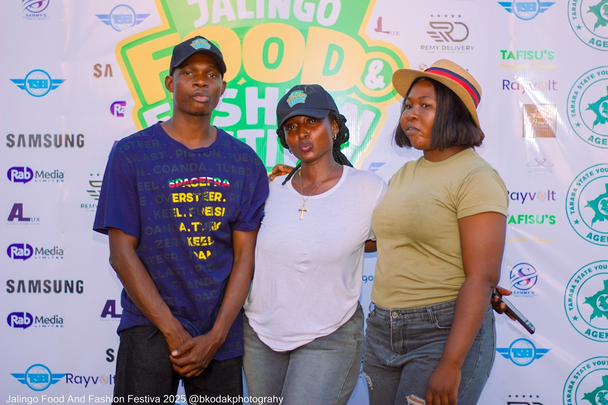

The Jalingo Food & Fashion Festival (JAFFFEST) is a vibrant celebration of food, fashion, music, and culture, bringing together talented chefs, designers, and creatives in one unforgettable experience.
JAFFFEST is designed to showcase the creativity, culture, and entrepreneurial spirit of Jalingo and beyond. From delicious food experiences to stunning fashion showcases, the festival creates a unique platform for businesses and creatives to connect with thousands of visitors.
The event brings together food vendors, fashion designers, beverage brands, and entertainment to create a vibrant environment where culture, creativity, and commerce meet.

To become the leading food and fashion festival in Northern Nigeria, celebrating creativity, culture, and entrepreneurship while putting Jalingo on the national cultural map.
To create a vibrant platform where chefs, designers, entrepreneurs, and creatives can showcase their talent, grow their brands, and connect with thousands of festival lovers.
JAFFFEST is more than just an event. It is a celebration of culture, creativity, and community where food, fashion, and entertainment come together in one vibrant experience.
Discover delicious meals from talented chefs, local restaurants, and street food vendors showcasing the rich flavors of Nigerian cuisine.
Experience stunning runway presentations from creative designers featuring modern African fashion and bold cultural expressions.
Enjoy exciting live performances from musicians, DJs, and entertainers that keep the festival energy alive throughout the event.
Support local businesses by exploring unique products from vendors, artisans, and entrepreneurs displaying their creativity.

Taraba TradeShow is dedicated to promoting culture, creativity, and entrepreneurship in Taraba State. Through events, exhibitions, and festivals, the organization creates platforms that support local businesses, artists, chefs, designers, and entrepreneurs.
The Jalingo Food & Fashion Festival (JAFFFEST) is one of the signature initiatives aimed at celebrating the vibrant culture and growing creative industry in the region.
Partner With Us